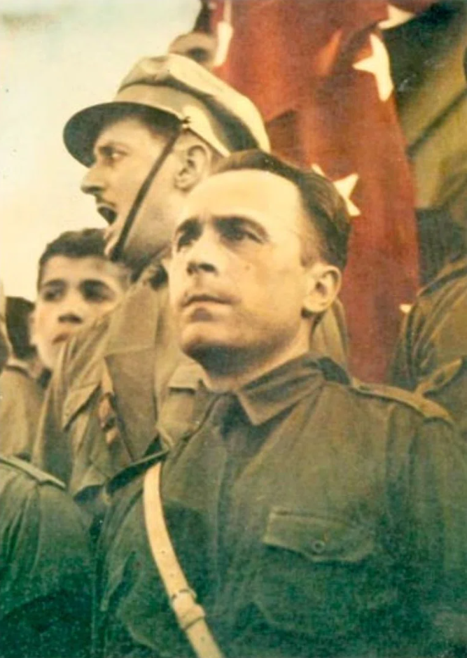
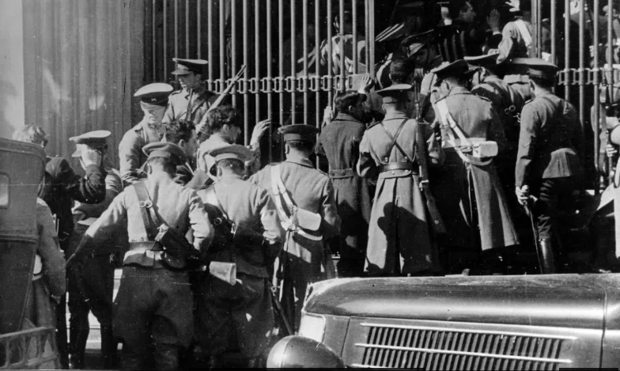
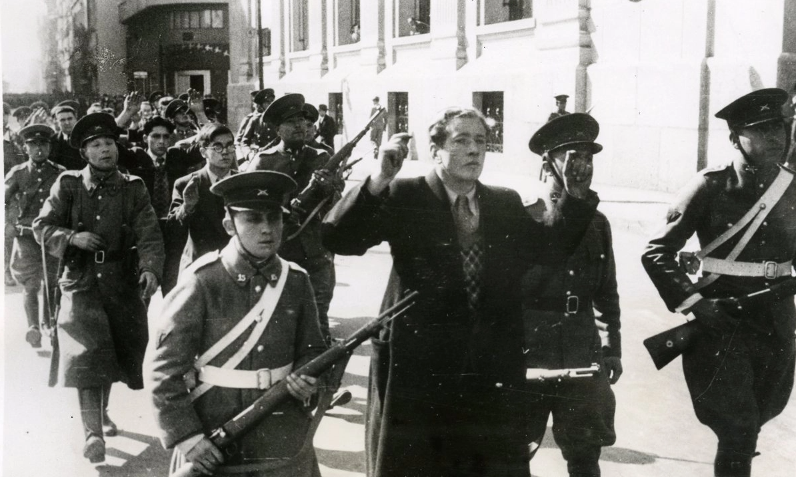

5 de septiembre de 1938 — Santiago de Chile
El trágico desenlace del Movimiento Nacionalista chileno.

Jorge González von Marées, líder del Movimiento Nacional Socialista (MNSCH).
Fundado en 1932 por Jorge González von Marées, el MNSCH se inspiraba en el fascismo europeo. Con un discurso nacionalista, anticomunista y corporativista, apoyó la candidatura de Carlos Ibáñez del Campo para las elecciones de 1938.

Fuerzas armadas y de orden durante la toma del edificio del Seguro Obrero.
El 5 de septiembre de 1938, unos 60 jóvenes nacistas tomaron la Caja del Seguro Obrero y la Universidad de Chile, esperando un golpe de Estado. Tras rendirse, fueron llevados al edificio del Seguro Obrero, donde fueron ejecutados sumariamente por orden del general Humberto Arriagada. En total, 59 jóvenes fueron asesinados.

Detenidos y militantes tras los hechos de 1938.
La masacre conmocionó al país y desprestigió al gobierno de Arturo Alessandri. Carlos Ibáñez retiró su candidatura, y los votos opositores se volcaron hacia el Frente Popular, llevando a Pedro Aguirre Cerda a la presidencia. El MNSCH se fracturó y nunca recuperó su fuerza política.